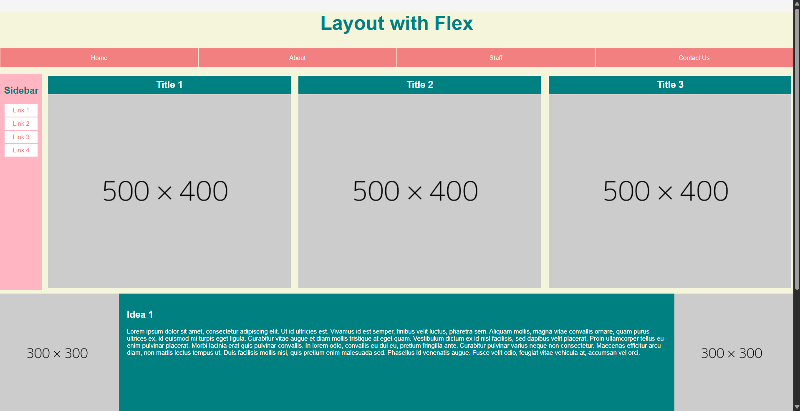
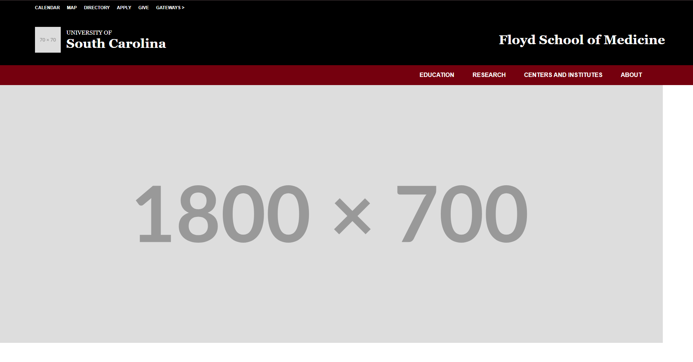
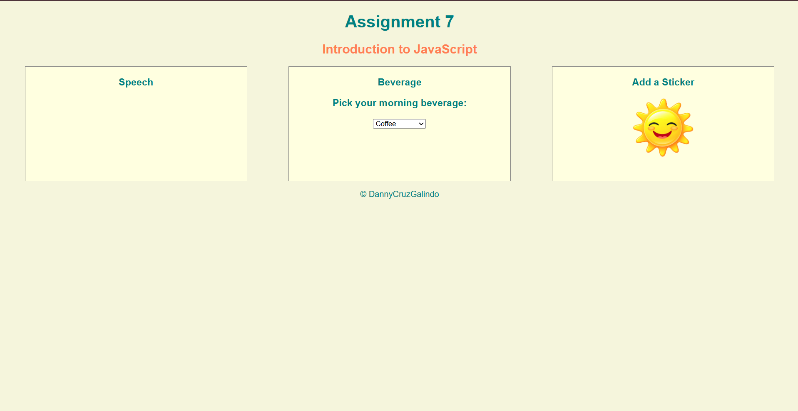
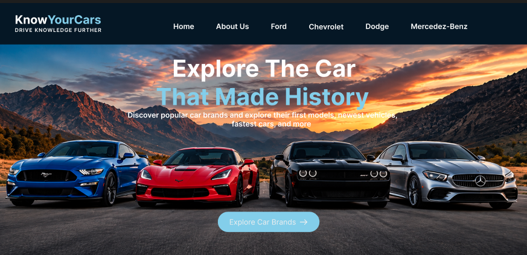
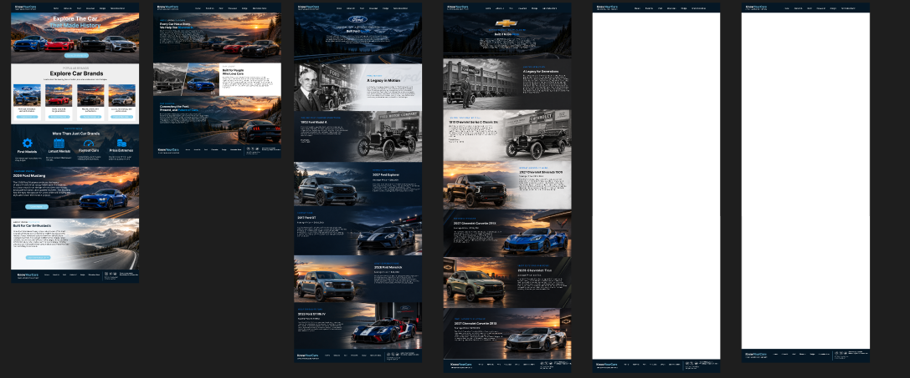

Assignment 1

First Assignment: This assignment introduced the basic structure of the an HTML webpage using headings, paragraphs, images, and links.
CSCE 242 is a course at the University of South Carolina. This course focuses on the basics of web development by using HTML. We learn how to use HTML to create, organize text, images, links, and other content to use on our websites. The course also helps develop a better understanding of how websites work and are built.
View My GitHub Repository
First Assignment: This assignment introduced the basic structure of the an HTML webpage using headings, paragraphs, images, and links.

Second Assignment: This assignment focused on using CSS to add colors, fonts, backgrounds, images, and other styles to a webpage.

Third Assignment: This assignment uses Flexbox and media queries to create a webpage that changes layout based on the screen size.

Fourth Assignment: This assignment builds upon the previous ones to create a more similar webpage of UofSC Floyd School of Medicine. This assignment uses Flexbox, media queries, and other CSS properties to create a responsive webpage.

Seventh Assignment: This assignment uses JavaScript to create interactive features, including a speech bubble, beverage selector, and clickable sticker.

Project 1 Assignment: This project proposal explains the topic and main idea that I plan to use for my semester website.

I created a professional homepage wireframe in Figma that uses organized sections, images, text, and a consistent layout to present my website design.

I created wireframes for each page of my website in Figma, using consistent layouts, images, text, and navigation to show how the complete website will look.